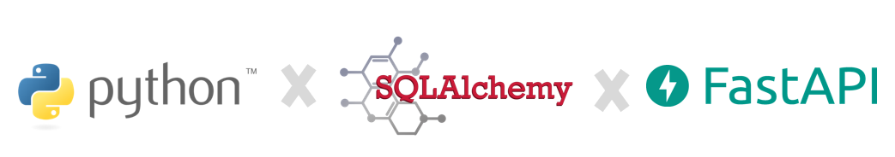

Banco de Dados em Automações
Autor: Alexsandro Flores Rosa
Resumo: O objetivo central é desenvolver uma automação que seja uma tríade da eficiência do FastAPI na criação de APIs, à robustez do SQLAlchemy na gestão de dados, e a flexibilidade do Python.
📄 Baixar PDF 